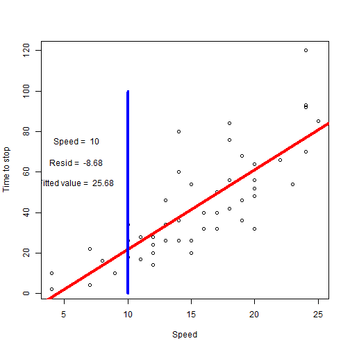

The cars data is available in the UsingR package in R. The dataset has two columns. The first column is speed which denotes the speed at which the car is travelling. The second column is the distance taken to stop the car when braking at the given speed. This app is a simple visual linear regression model to help play with the model. This is how the embedded plot in the app looks like
